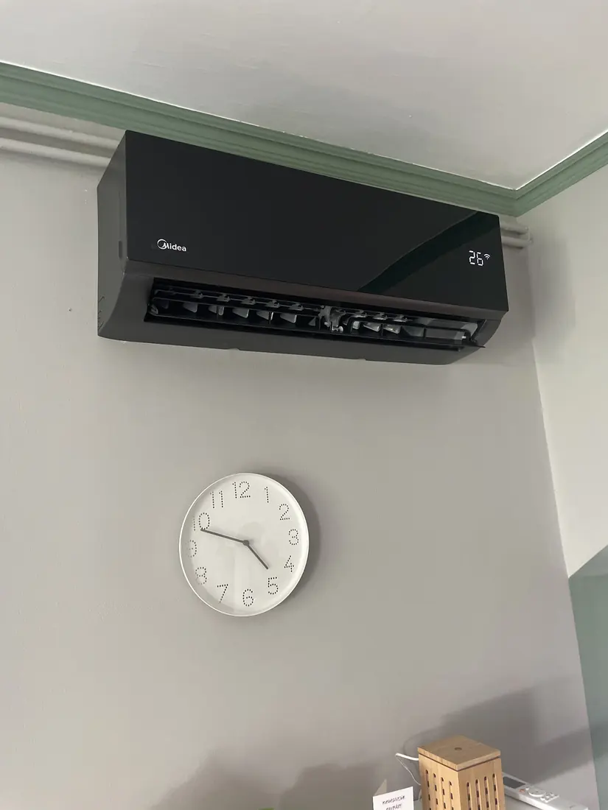
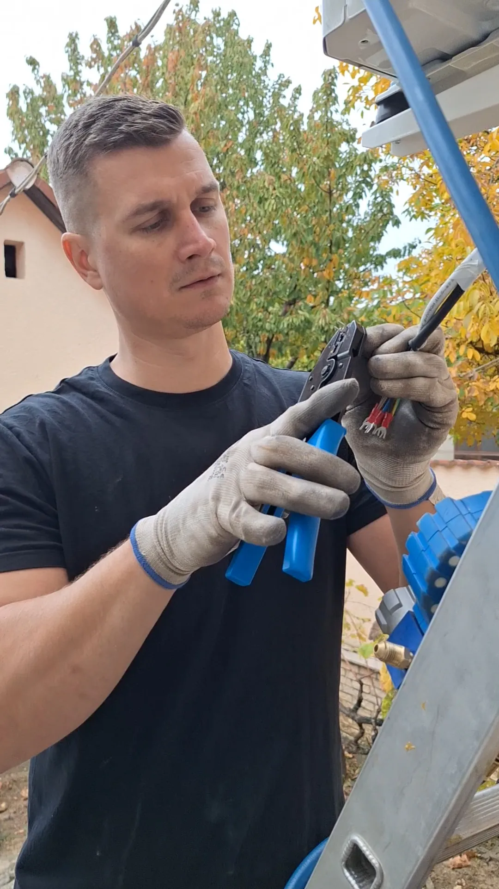
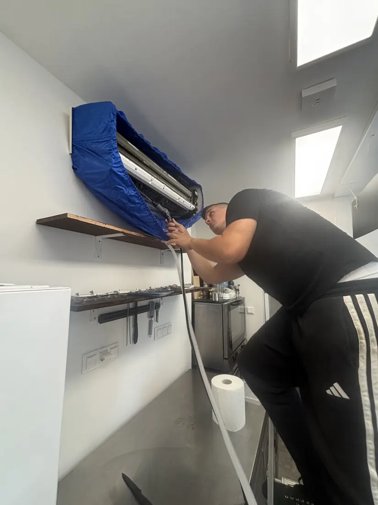
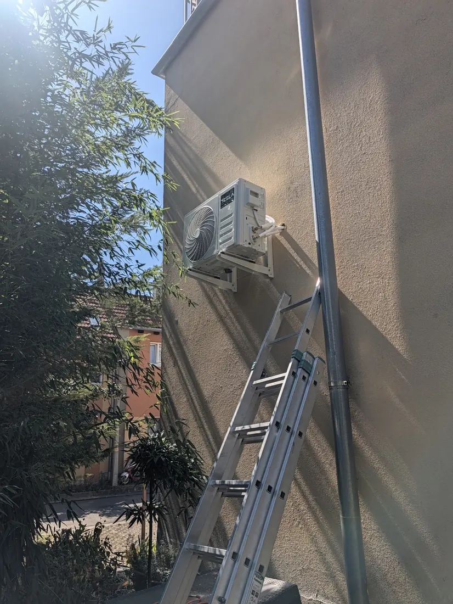
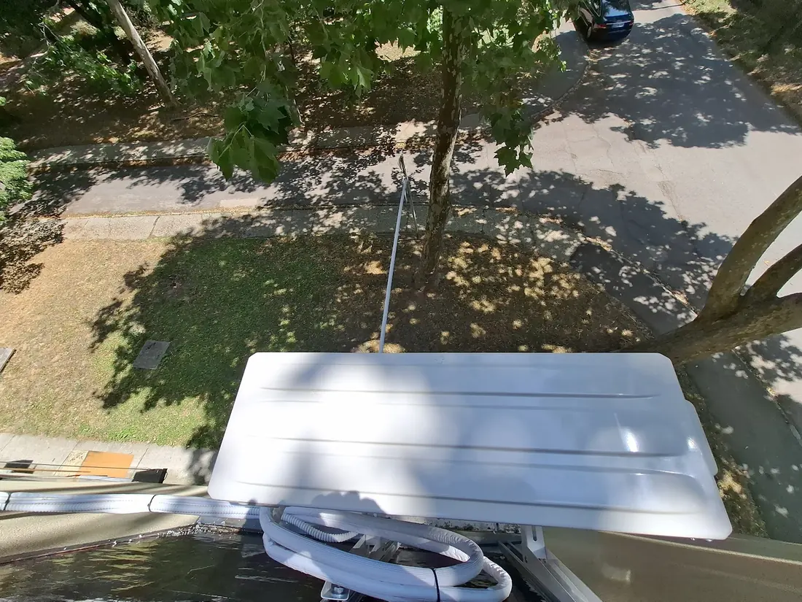

Klímatelepítés
Inverteres hűtő-fűtő klímák (Midea, Gree, Ande) felszerelése akár 5 napon belül. Előtte ingyen felmérjük a helyszínt, és a lakásodhoz illő készüléket ajánlunk.
Klímatelepítés, tisztítás és javítás Baranya egész területén, villanyszereléssel együtt. Gyors, megbízható, garanciális munka.

Ahol dolgozunk:
A Berta Klíma pécsi klíma- és villanyszerelő vállalkozás. Klímát telepítünk, tisztítunk és javítunk Pécsen és Baranyában, és a villanyszerelést is elvégezzük hozzá.

Inverteres hűtő-fűtő klímák (Midea, Gree, Ande) felszerelése akár 5 napon belül. Előtte ingyen felmérjük a helyszínt, és a lakásodhoz illő készüléket ajánlunk.

A klímát a helyszínen, védőzsákkal tisztítjuk, hogy semmi ne kerüljön a falra és a bútorokra.

Csöpög, nem hűt, áztat? Más által szerelt klímát is megnézünk.
Teljes körű lakossági villanyszerelés, nem csak a klímához.
Egy jó inverteres klíma nyáron hűt, télen fűt. Állítsd be, mire kell és mekkora a szoba, és megmutatjuk, nagyjából mekkora készülékkel számolj.
Szükséges teljesítmény, nagyjából Mintatartalom
2,5kW
Egy átlagos, 25 m²-es helyiség hűtésére kb. 2,5 kW kell. Erre egy 3,5 kW-os klíma elég, és marad benne tartalék.
270 000 Ft-tólbeszereléssel, a tavaszi akció ára ellenőrizendő
Tájékoztató becslés. A pontos méretet a szigetelés, a tájolás és a belmagasság dönti el, ezt az ingyenes helyszíni felmérésen nézzük meg.

„Ügyfelünk azzal keresett meg minket, hogy a kültéri egységéből a kondenzvíz az alsó szomszéd erkélyét áztatta. Mivel a kivitelezőt nem sikerült elérni, mi foglalkoztunk az üggyel, és szakszerűen megoldottuk.”
A Berta Klíma Facebook-bejegyzéséből, 2025. december
Néhány friss munka Pécsről és környékéről. Kattints a képre a nagyításhoz.
Nem kell heteket várnod a szerelőre.
Telefonon, e-mailben, Facebookon vagy az ajánlatkérővel.
Megnézzük a helyet, és elmondjuk, mire számíts.
Az igényeidhez illő készüléket ajánlunk, pénztárcabarát áron.
Gyorsan, tisztán, profin. A munkaterületet rendben hagyjuk.
A vélemények visszatérő témája: gyors, precíz és tiszta munka.
„Gyorsan a segítségünkre siettek, a helyszínen villámgyorsan és szakértő módon tisztították ki a klímát.”
„A telepítés gyors, precíz és tiszta munkával történt, minden kérdésünkre részletes választ kaptunk. A klíma csendesen működik.”
„Gyorsan és precízen szerelték fel a klímát, minden részletre odafigyelve. A munkaterületet tisztán hagyták maguk után.”
„Gyors, alapos és nem mellesleg tiszta munka.”
„Precíz, pontos munka. Korrekt árak.”
„Látszik a szakértelem.”
Egy korszerű inverteres klímával fűteni is tudsz, és az átmeneti időszakban gyorsan meleget teremtesz ott, ahol épp kell. Ne akkor keress klímást, amikor már mindenki fűteni akar.
Írd meg, mire van szükséged, és visszahívunk egyeztetni.
Ha nem találod a választ, hívj nyugodtan.
A felmérés és az egyeztetés után akár 5 napon belül telepítjük a klímát.
Igen. Egy korszerű inverteres klíma kiegészítő, sőt fő fűtésre is alkalmas. A Gree Comfort Pro 3,5 kW például −25 °C-ig működik, A+++ energiaosztályú.
A Midea Xtreme Save 3,5 kW 270 000 Ft-tól kerül fel beszereléssel. ellenőrizendő ár A pontos árat az ingyenes helyszíni felmérés után adjuk meg, mert a szerelés a helyszíntől függ.
Pécsen és Baranya vármegyében: Siklós, Harkány, Komló, Szigetvár, Mohács, Barcs és környékük, valamint Tolnában Szekszárd környékén is.
Igen, a klímát a helyszínen tisztítjuk, és más által szerelt készülék hibáját is megnézzük.
Igen, a villanyszerelést A-tól Z-ig vállaljuk, a klímák saját betápját is mi készítjük el.
Igen, a készüléktől függően akár 10 év gyártói garancia jár rá.